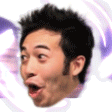

Original gif:
On dark theme:
On light theme:

Sprite maps:
Original gif on dark theme converted to sprite map:
Original gif on light theme converted to sprite map:
Diff:
Pixels that differ from dark to light, a margin of error had to be included, gifs have lots of data loss:
Final outputs
Sprite map on light theme screened for differing pixels:
Large size scaled down to 3/4 with bilinear filtering:
Large size scaled down to 2/4 with bilinear filtering:
Large size scaled down to 1/4 with bilinear filtering:
Sprite maps animated with text:
This
is
some
text
.
Align
the
emotes
to the center.